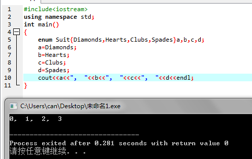
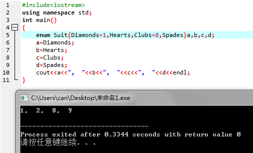
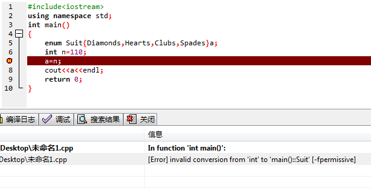
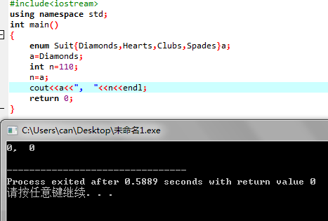

C++枚举类型详解
原创作品，转载请注明来源：http://www.cnblogs.com/shrimp-can/p/5171110.html
一、枚举类型的定义
enum 类型名 {枚举值表}；
类型名是变量名，指定枚举类型的名称。
枚举值表也叫枚举元素列表，列出定义的枚举类型的所有可用值，各个值之间用“,”分开。
例：
enum Suit { Diamonds, Hearts, Clubs, Spades };
二、枚举变量说明
枚举变量有多种声明方式：
1.枚举类型定义与变量声明分开
如：
enum Suit { Diamonds, Hearts, Clubs, Spades };
enum Suit a;
enum Suit b,c;
变量a,b,c的类型都定义为枚举类型enum Suit。
2.枚举类型定义与变量声明同时进行
如：
enum Suit { Diamonds, Hearts, Clubs, Spades }a,b,c;
此处类型名可以省略，如以下的声明也是可以的。
enum { Diamonds, Hearts, Clubs, Spades }a,b,c;
3.用typedef先将枚举类型定义为别名，再利用别名进行变量的声明
有以下几种方式：
1).typedef enum Suit { Diamonds, Hearts, Clubs, Spades }Suit;
enum Suit a;
enum Suit b,c;
2).typedef enum{ Diamonds, Hearts, Clubs, Spades }Suit;
enum Suit a;
enum Suit b,c;
3).typedef enum Suit { Diamonds, Hearts, Clubs, Spades };
enum Suit a;
enum Suit b,c;
注意：同一程序中不能定义同类型名的枚举类型；不同枚举类型的枚举元素不能同名。
三、枚举元素说明
1.将会为每个枚举元素分配一个整型值，默认从0开始，逐个加1。

2.也可以在定义枚举类型时对枚举元素赋值，此时，赋值的枚举值为所赋的值，而其他没有赋值的枚举值在为前一个枚举值加1.

H~CZZ0P(XL3)Z]OM(9RWG.png)
2.枚举值是常量不是变量，不能在程序中再为枚举元素赋值。
四、枚举型与整型的转换
枚举型可以隐式的转换为int型，int型不能隐式的转换为枚举型。
int型不能隐式转换为枚举型

枚举型可以隐式的转换为int型

参考：https://msdn.microsoft.com/zh-cn/library/2dzy4k6e.aspx
http://www.cnblogs.com/JCSU/articles/1299051.html


【推荐】华为云7大明星产品0元免费使用
【推荐】腾讯云如何降低移动开发成本
【大赛】2018首届“顶天立地”AI开发者大赛
· 腾讯携手东华软件 推动传统行业数字化转型升级
· 马化腾：未来腾讯要把最重要的数据存储在贵州
· 蔚来汽车联合创始人：和江淮关系融洽，蔚来汽车的交付很快开始
· 爆料：百度市场公关副总裁王路将离职
· 乐信集团进军汽车金融 “乐买车”只是员工福利
» 更多新闻...
· 评审的艺术——谈谈现实中的代码评审
· 如何高效学习
· 如何成为优秀的程序员？
· 菜鸟工程师的超神之路 -- 从校园到职场